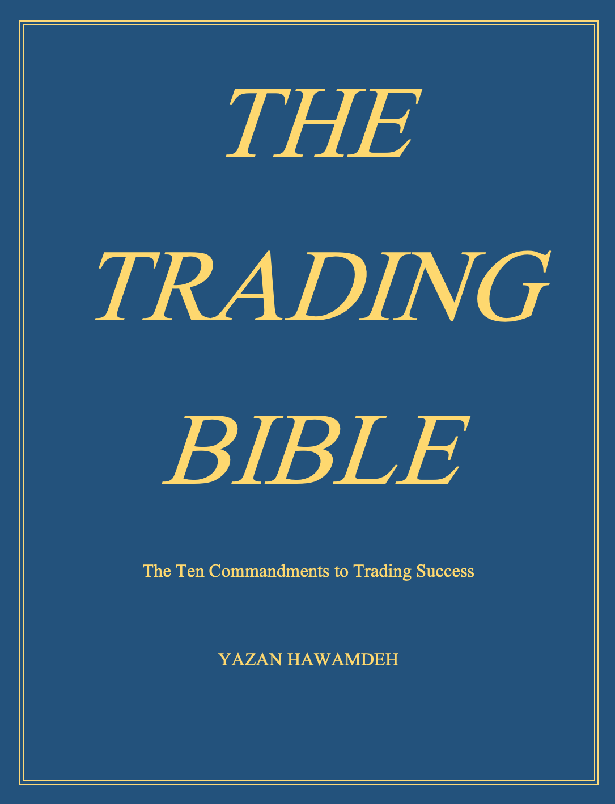

|  |
Where the thoughts lie...
I'm currently writing a book about my experience in trading.
Being who I am today, I can sincerely say there is no way to reach success without discipline. It’s the only way to reach the pot of gold. After all these years, I’ve never felt so confident about my trading skills and I can strongly agree, that if it weren’t for the failure, you wouldn’t be reading this right now.
I never gave up. Every time I failed; it was an entry to the next experience. While others would give up after failing the first or second time, I remained optimistic. The additional experience always added more to my principles.
The Trading Bible will review the principles required to maintain consistent returns and build a successful portfolio.
|